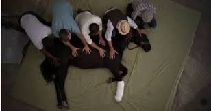

1972. április 17-én egy gyönyörű sötét-pej kanca látott napvilágot a Kentucky Claiborne Farmon. Tenyésztői és első gazdái Stuart és Barbara Janney. A ló apai nagyapja a híres Bold Ruler volt, s ezen az ágon rokonságban állt Secretariat-tal is. A különlegesen magas kanca (172 centis marmagassággal) 2 évesen került Frank Y. Whiteley-hez. Whiteleynek köszönhető Ruffian karrierje.
Ruffian élete 10 versenyén végig veretlen maradt, bár voltak gyengélkedő pillanatai is. Élete első futását 15 hosszos előnnyel nyerte, és a többi első helyét is 8 hossz átlagos előnnyel szerezte meg. Úgy tűnt, meg sem erőlteti magát a hatalmas száguldásban, és 1975-ben fölényesen nyerte meg a kancák Hármas Koronáját, a Hármas Tiarát. Ő kapta az 1974 kancacsikója címet.
Ruffian életének utolsó futása egy összehasonlító futam volt az akkori Kentucky Derby győztesével, Foolish Pleasure-rel, akinek nagyapja szintén Bold Ruler volt, tehát tulajdonképpen rokonnak számított a két ló. A verseny 1975. július 6-án zajlott le. Mivel a két állatnak azonos lovasa volt, Jacinto Vasqueznek a két ló közül kellett választania, s ő Ruffian mellett döntött, bízva abban, hogy a két ló közül ő a jobb. Bár a valóságban pénz is volt a tét, az emberek úgy érezték, ez lesz a nemek versenye, és onnantól így is emlegették. A lovak beálltak és megszólalt az indító csengő és Ruffian vállát súlyosan megsebesítette a kivágódó ajtó. De a kanca a hihetetlen fájdalom ellenére mégis elindult, s az első 400 méteren fej-fej mellett futott a ménnel. A következő 200 méteren azonban eltörte a jobb elülső lábát, így már muszáj volt megállnia. 50 000 ottani, és 18 millió televízió előtti ember nézte végig ahogy Ruffian a végsőkig küzd a győzelemért. Amint a zsokéja észrevette, hogy valami baj van, azonnal leugrott a kanca hátáról. A helyszínről azonnal egy állatkórházba szállították. 4 orvos és egy ortopéd sebész 3 órás operációja sikeresnek bizonyult, de mikor a kanca ébredezett, lábaival ismét kapálódzni kezdett a padlón. A merevítők és a nehéz gipsz darabokra törte a ló másik lábát is, és az orvosok úgy gondolták, hogy két lábára kiható helyreállító műtétsorozatot már nem élne túl, ezért A Kancák Királynőjét a Nemek versenyét követő, napon elaltatták. A ló nem volt több 3 évesnél.
